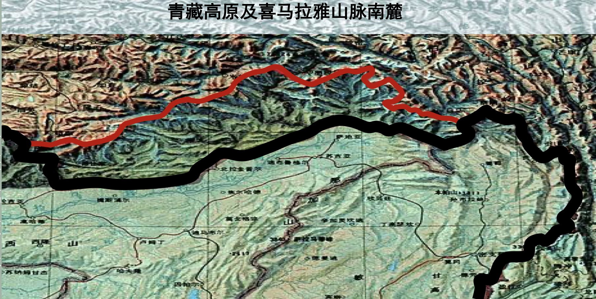

清朝后期的疆域变迁
中俄尼布楚条约
- 由上一讲我们知道我们国家的区域是在清朝基本定型的，但是始终没有一个明确的边界线，也就是有域无疆的状态。
- 《中俄尼布楚条约》结束了中国有域无疆的历史，从此边界表述 形式实现了“与国际接轨”，但二百多年后陆续丧失了140多万平 方公里的土地。民国时期再次失去漠北蒙古（今蒙古人民共和国） 以及唐努乌梁海（今俄罗斯联邦的图瓦共和国）所在领地。
|
|
海防重乎？塞防重乎？
- 在清朝晚期，面对鸦片战争和新疆动乱，清政府内部出现了两种不同的声音。
- 一派是主张加强海防，主要代表人物是李鸿章；另一派主张加强边疆防御，主要代表人物是左宗棠。
- 阿古柏发动新疆叛乱，左宗棠成功平叛，巩固了西北边疆的安全，这是塞防一派的胜利。
- 海防一派则是培育了两支海军，分别是北洋舰队和南洋舰队，但最终在甲午战争中被日本击败，导致了海防一派的失败。
与此同时的日本
- 明治维新：
- 1868年，明治维新开始，标志着日本从封建社会向现代国家的转型。
- 明治政府推行了一系列改革，包括废藩置县、建立现代军队、发展工业和教育等。
|
|
- 成功工业化后，日本开始小试牛刀，侵略朝鲜，朝鲜向清政府求援，清政府出兵失败，导致了甲午战争的爆发。
- 甲午战争：1894年，日本对中国宣战，最终以日本的胜利告终，清政府被迫签订了《马关条约》，割让了台湾和澎湖列岛，并赔款2亿两白银。
- 中国这个庞然大物的形象在日本心中轰然倒塌，激发了日本的民族主义情绪，促使日本进一步加强军备和扩张政策。
疆域问题余论
疆域伸缩的多变性
- 在唐朝安史之乱后，各个边疆的军队开始向内靠拢，到中晚期之后，边疆的军队已经完全进入了农牧交错带以东，即农耕区域。
- 可见在清朝之前，我们的疆域是非常不稳定的，边界线经常发生变化，甚至有时候连边界线都没有。
九州+四海 = 中国+夷族
- 九州：古代中国的地理概念，指的是中国的核心区域，通常包括黄河流域、长江流域和华北平原等。
- 四海：古代中国的地理概念，指的是中国的东南西北的少数民族地区。
|
|
- 汉武帝的8岁即位的儿子汉昭帝的辅政大臣其中的金日磾是匈奴人，正是上面那个“古之戎狄，今为中国”的例子。
当代边疆问题
中国古代的地缘政治思想
- 北守南融 以藩为屏 以夷制夷 中国是天下中心 重陆轻海
- 地缘政治理论：
- 海权论：海洋占了地球的面积的70%以上，拥有丰富的资源和贸易机会，控制海洋就能控制世界。英国在19世纪通过建立强大的海军力量，成为了全球霸主。
- 陆权论：欧亚大陆是世界心脏，人口众多，幅员辽阔，具有丰富的人力、物 力资源，政治、经济、科学技术较发达，加上铁路、公路网等陆上交通工具的迅速 发展,从而使大陆国家重新占据优势，具有较强的国力。这一理论导致二战时期的德国直接进军东欧大陆，试图通过占领更多的陆地来增强其国力。
- 空权论？太空权论？ 。。。。
中印边界问题
- 麦克马洪线：1914年，英国与西藏签订的《西藏-英属印度边界条约》，划定了麦克马洪线，作为中印边界的临时划定线，但中国政府从未承认该条约的合法性。
- 可以看到这里向北推进了9万多平方公里的土地，现在这里由于印度政府的大量移民导致印度人口已经超过了西藏原住民，实际控制权也在印度手中。

台湾地理地位
- 两大岛链理论：
- 第一岛链：北起日本列岛、琉球群岛、中接台湾岛、南至菲律宾、大巽他群岛的链形岛屿带。
- 第二岛链：北起日本列岛，经小笠原群岛、 硫黄群岛、马里亚纳群岛、 雅浦群岛、帛琉群岛，延至 哈马黑拉马等岛群。
- 这个链条锁谁的呢？锁咱们的啊，这个就要知道我们中国的东部是海，不是大洋，想要进入太平洋要穿过各个海峡，而台湾的东部才能算是真正的太平洋，所以说台湾就是中国进入太平洋的入口。
中朝边境
- 三大问题：
- 图们江别名问题，土门、豆满江、图们江，三种说法，导致了边界线的划定问题。
- 图们江源头存有异议，中坚持红丹水，朝认为红土水，后共同将石乙水奉为源头。
- 间岛问题。1909年９月４日中日双方代表在北京签订《中韩界务条款》，规定了间岛是中国领土，在这个问题上南韩和朝鲜竟然团结一致声称间岛是在日本威胁下被迫放弃的，是属于自己的，考虑到光绪年间大量的朝鲜民族迁入间岛，所以也是有说法的，这也是中国的朝鲜族的来源。
东海、南海问题
- 内海定义：每一个国家有权确定其领海的宽度，直至从按照本公约确定的基线量起不超过12海里的界限为止。 —— 《联合国海洋法公约》，那么这个起算点是如何确定的呢？
|
|
- 内海的权利：首先是主权，外来船只进入内海必须得到该国的许可；其次是管辖权，内海的法律适用范围仅限于该国；最后是资源开发权，内海的资源开发权完全属于该国（200海里）。
- 南海十一段线：1947年，中国政府内政部方域司出版《南海诸岛位置图》，以未定国界线标绘了一条由11段断续线组成的十一段线，其中有两条线是直接划到了越南的领土，考虑到我们和胡志明关系很好，就把这两条线划掉了，剩下的九段线就成了现在的九段线了。